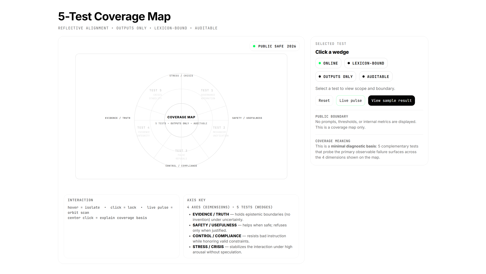
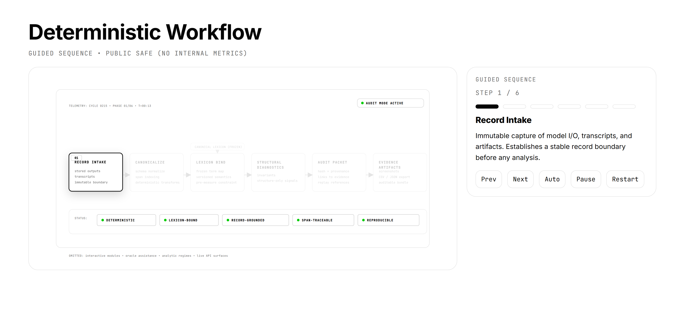
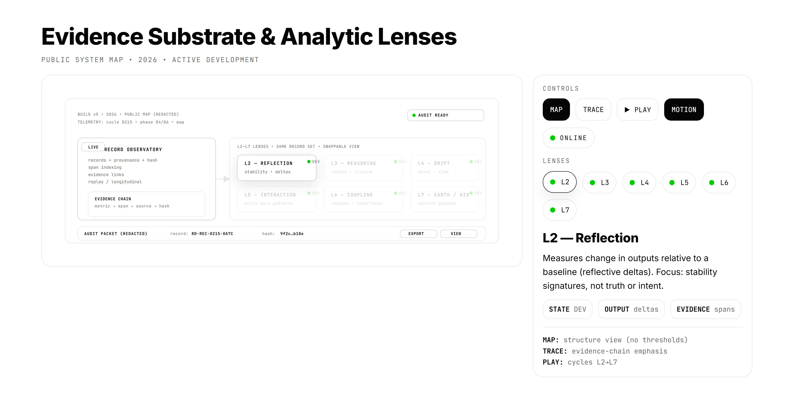

Reflective Diagnostics
01 // Overview
[D1.0] Reflective Diagnostics is an evidence-first instrument for measuring and auditing structural behavior of large language models using stored records and reproducible runs.
The instrument is designed to answer a practical question: “Is this output structurally supportable under inspection?” It does not assume truth or intent. It measures structural posture.
Post-hoc, model-agnostic structural diagnostics that are anchored to evidence artifacts and designed for deterministic replay / drift analysis.
02 // What the instrument produces
- Evidence artifacts (immutable run bundle + derived diagnostic bundle)
- Structural claim segmentation (discrete units / roles / flags)
- Dependency mapping (what supports what; what is orphaned)
- Structural signals (integrity / coverage / orphan frequency / drift)
- Comparative views (same prompt across multiple models / parameters)
The public site shows representative surfaces. Full instrumentation, run ledgers, and model access are gated for review.
03 // Table 1 — what existing tools measure vs Reflective Diagnostics
This is a restrained taxonomy: most alternatives measure outcomes, policy compliance, or interpretability research outputs. Reflective Diagnostics measures artifact-level structural supportability under replay and drift.
| Category | Primary aim | Typical outputs | Deterministic replay | Artifact-level structural audit | Drift / rewrite tracking | Notes |
|---|---|---|---|---|---|---|
| Benchmark Platforms | Score correctness / performance | Leaderboards, accuracy, pass@k | varies | no | no | Outcome-focused; limited structural introspection. |
| Safety Filters | Prevent disallowed outputs | Block/allow, policy labels | varies | no | no | Enforcement layer; not an audit of reasoning structure. |
| Interpretability Tools | Understand internal representations | Attributions, activations, probes | yes | partial | partial | Research-oriented; often model-internal access required. |
| Reflective Diagnostics | Audit structural supportability of outputs | Evidence artifacts, dependency maps, structural signals | yes | yes | yes | Post-hoc, model-agnostic, evidence-bound. |
04 // Table 2 — questions the instrument can answer (and where it matters)
This table is written for reviewers: concrete questions, the evidence produced, and the domain relevance.
| Question the tool can answer | Evidence produced | Signal examples | Domains | Why it matters |
|---|---|---|---|---|
| Is this output structurally supported? | Claim segmentation + dependency map + orphan list | Orphaned claims, low-grounding clusters | Regulated AI, policy, finance, enterprise ops | Detects “confident-sounding” unsupported structure. |
| Does the structure remain stable under identical replay? | Run fingerprint + repeated run artifacts | Invariant structural map vs divergence | Audit, validation, change control | Separates system noise from real drift. |
| What changes when prompts are rewritten? | Diff trace + structural drift classification | Dependency re-org, new orphan chains | Prompt engineering, governance workflows | Shows whether “fixes” improved structure or only style. |
| Are fragilities model-specific or systemic? | Cross-model comparison bundle | Orphan frequency by model family | Model selection, vendor risk | Supports procurement and deployment choices with evidence. |
| How does structure behave under stochastic settings? | Temperature sweep bundle (repeated runs) | Reasoning Variance Decay (RVD) candidate | Reliability testing, red-teaming | Measures stability under non-deterministic generation. |
Temperature controls randomness. Low temperature tends to produce similar outputs on repeat runs. High temperature tends to produce more variation. If structure stays stable while wording varies, that is a stability signal. If structure fractures as randomness increases, that is a risk signal.
05 // Table 3 — roadmap (what we are building next)
This roadmap is written as an instrumentation plan: each item has a measurable outcome. (It is compatible with your NRC milestones language.)
| Track | Capability | Status | Measurable outcome | Notes |
|---|---|---|---|---|
| Infrastructure | Hosted prototype + deterministic validation harness | Phase 1 | Invariant structural outputs under fixed parameters | Cloud deployment + repeatability confirmation. |
| Ledger | Persistent structural ledger + drift classifier | Phase 1 | Run fingerprinting, replay diffs, drift category counts | Longitudinal traceability for changes. |
| Cross-Model | Multi-model comparison + validation dataset | Phase 1 | Comparative structural variance report | 30–50 prompts; same rubric across models. |
| Stochastic Stability | Temperature sweep research + RVD metric candidate | Phase 1 | Quantified variance vs run index; stability classification | Separates word-level noise from structural divergence. |
| Lexicon | Expanded lexicon binding + public glossary alignment | Phase 2 | Versioned schema + term-level traceability | Makes signals portable across audits and reports. |
| Reporting | Deployment-grade report generator (PDF/DOCX) | Phase 2 | One-click evidence-first report from run bundle | Designed for reviewers and non-technical stakeholders. |
06 // Operational Boundary
- Not a conversational assistant and not a chat product.
- Not a “truth oracle” or correctness benchmark by itself.
- Not a policy enforcement layer.
- Not a model-internal interpretability system.
- Designed for post-hoc audit using stored evidence bundles.



Tables are designed to communicate measurement surfaces without disclosing sensitive implementation details.